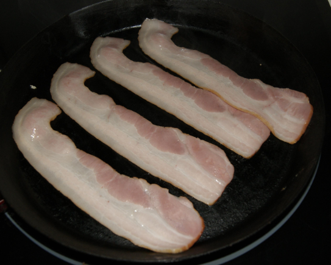

Bocata de frankfurt

Indice
- Primer paso
- Segundo paso
- Tercer paso
- Cuarto paso
- Quinto paso
- Ultimo paso
Ingredientes
- 1 Panecillo o baguette
- 1 frankfurt
- 3 o 4 Tiras de bacon
- 2 Lonchas de queso
- 1/2 Tomate
Receta
- Untamos el pan con tomate (opcional)
- Ponemos una plancha a calentar, ponemos el bacon, cuando este hecho lo pondremos en el pan.

- Después fundimos el queso.
- Y se lo ponemos por encima del bacon
- Y por ultimo el frankfurt abierto por la mitad.
- Cuando este hecho lo ponemos encima del queso,y ya tendremos nuestro frankfurt completo.
Volver al menu